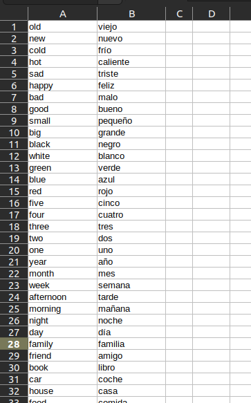

How to Import Your Flashcards from a CSV File
Many of us have spent years building our vocabulary on other platforms. If you're looking for a new home for your decks and want to take control of your learning data, this guide will show you how to get them into Mnemeo.
Step 1: Get Your Data into a CSV File
The first step is to get your course data into a universal .csv (Comma-Separated Values) format. While we can't endorse any specific third-party tools, the community has developed several methods for various platforms.
A web search for a phrase like "how to export Memrise course to CSV" is the best starting point for finding a solution that works for you.
Step 2: Prepare Your CSV File
Once you have your data, you need to ensure it's formatted correctly. Mnemeo is flexible, but a clean file is the key to a smooth import. The only requirement is that you have at least two columns: one for the "front" of your cards and one for the "back."
Pro-Tip: Mnemeo's CSV parser is smart! It will automatically:
- Skip any empty lines.
- Ignore comment lines that start with a
#character. - Correctly handle complex fields that are in quotes (e.g.,
"a field, with a comma").
Step 3: The Import Process
This is where the magic happens. Mnemeo's import process is designed to be simple and intuitive.
- From the app's dashboard, click the "Import" button and choose the **"CSV"** option.
- When you select your
.csvfile, you'll see our **Field Mapping** interface. This is where you tell Mnemeo how to read your file. - For the "Front" and "Back" of your cards, simply choose which column from your file you'd like to use for each side. This gives you the flexibility to import your data exactly the way you want—you can even swap the front and back sides if you wish. You'll see a live preview of your first few cards to make sure everything looks right.
- Finally, confirm your choices. The app will automatically create a new deck named after your file and import all valid cards, trimming any extra whitespace and skipping any empty rows.
That's it! Your learning data now has a new, secure home where you have full control.